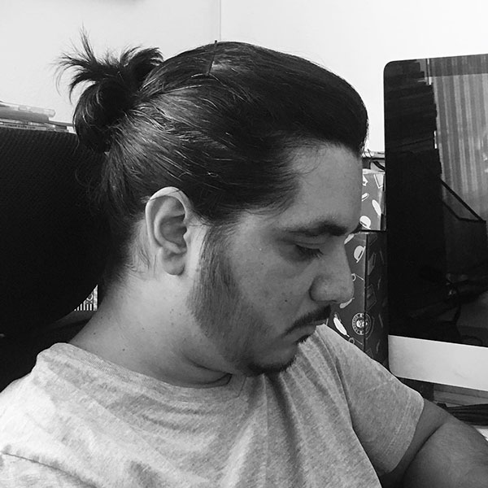

Rafael Lucas Arruda
Estudante de Análise e Desenvolvimento de Sistemas
Professor de História, Sociologia e Geografia
São Paulino de coração!
Estilo de música favorito: Tanto faz! rs
Layouts Fluídos e Elementos Gráficos
Estudante de Análise e Desenvolvimento de Sistemas
Professor de História, Sociologia e Geografia
São Paulino de coração!
Estilo de música favorito: Tanto faz! rs